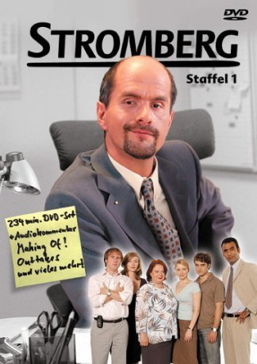

")
 
 IMDB-Wertung: 8.3 / 10
IMDB-Wertung: 8.3 / 10  Metascore:
Metascore: 
"Stromberg" ist die Sitcom rund um den "ganz normalen Bürowahnsinn". Im Mittelpunkt steht ein Chef, den man seinem ärgsten Feind nicht als Vorgesetzten wünscht: Bernd Stromberg (Christoph Maria Herbst). Er ist sarkastisch bis ins Mark, egozentrisch ohne Gleichen, zielstrebig bis in die Haarspitzen – vor allem wenn es um seine eigenen Interessen geht.
Jahr: 2004
Dauer: 24 Minuten
FSK:
Land: Deutschland Studio: Pro 7Tonspuren:
Untertitel:
Auflösung: 720p (1280x720) Größe: 666 MB
Regisseur: Arne Feldhusen, Franziska Meletzky, Andreas Theurer
Drehbuch: Ralf Husmann, Ricky Gervais, Stephen Merchant, Moritz Netenjakob, Dietmar Jacobs
Soundtrack:
Darsteller:
 Oliver Wnuk als Ulf Steinke
Oliver Wnuk als Ulf Steinke Michaela Caspar als Frau Papenacker
Michaela Caspar als Frau Papenacker Robert Schupp als Herr Tröscher
Robert Schupp als Herr Tröscher Victoria Mayer als Alexandra Klausen
Victoria Mayer als Alexandra Klausen Christoph Maria Herbst als Bernd Stromberg
Christoph Maria Herbst als Bernd Stromberg Bjarne Mädel als Berthold Heisterkamp
Bjarne Mädel als Berthold Heisterkamp Milena Dreißig als Jennifer Schirrmann
Milena Dreißig als Jennifer Schirrmann Martina Eitner-Acheampong als Erika Burstedt
Martina Eitner-Acheampong als Erika Burstedt Laurens Walter als Lars Lehnhoff
Laurens Walter als Lars Lehnhoff Kai-Peter Malina als Achim Dörfler
Kai-Peter Malina als Achim Dörfler Max Mauff als Azubi Jonas
Max Mauff als Azubi Jonas Piet Fuchs als Herr Fritsche
Piet Fuchs als Herr Fritsche Cristina do Rego als Ina
Cristina do Rego als InaDatei: X:\HD-Serien\Stromberg\Stromberg S01\Stromberg S01E01 Der Parkplatz.mkv seit 01.02.2016
Festplatte: HD Serien(I-ST)
 Es gibt insgesamt 182 Filme in der Gruppe 'HD-Serien'
Es gibt insgesamt 182 Filme in der Gruppe 'HD-Serien'